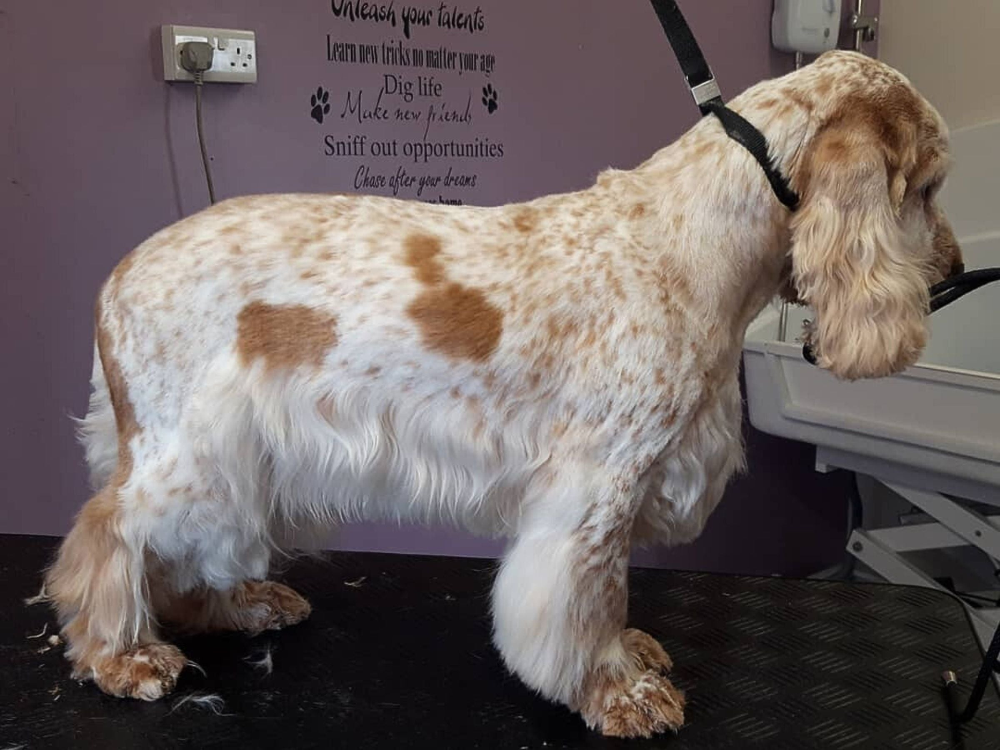

Grooming
Regular grooming is essential for maintaining the health and beauty of your English Cocker Spaniel's coat, which requires brushing, bathing, and ear care.
Grooming Essentials
Brushing:
Frequency: Brush your English Cocker Spaniel at least three to four times a week, and daily during shedding seasons. This helps prevent mats and tangles in their dense, medium-length coat .
Tools: Use a slicker brush for removing tangles and loose hair, a wide-toothed comb for detangling feathered areas, and a pin brush for smoothing the coat.
Bathing:
Schedule: Bathe your dog every 4 to 6 weeks to keep the coat clean without stripping natural oils. Use a gentle dog shampoo to maintain coat health.
Trimming:
Areas to Trim: Regularly trim the hair around the ears, feet, and tail to maintain a neat appearance and reduce debris collection. Professional grooming every 6 to 8 weeks can help manage coat length and maintain the breed's characteristic look.
Ear Care:
Cleaning: Check and clean your dog's ears weekly to prevent infections, as their long, floppy ears are prone to issues without proper care .
Nail Trimming:
Frequency: Trim your dog's nails every few weeks to support proper paw health and comfort during walks.
Additional Tips
Conditioning Treatments: Integrate conditioning treatments a few times a month to enhance coat softness and detangle stubborn knots.
Positive Experience: Make grooming a positive experience by using treats and praise, ensuring your dog feels comfortable during the process.
By following these grooming practices, you can keep your English Cocker Spaniel looking great and feeling healthy, while also preventing common grooming-related issues. Regular grooming not only enhances their appearance but also contributes to their overall well-being.
English Cocker Spaniel Puppy Cut An English Cocker Spaniel puppy cut keeps the coat shorter and more even across the body, legs, and feathered areas. This style is easier to maintain than a full natural coat, especially for active dogs that collect dirt, burrs, or tangles during outdoor play. A puppy cut can help reduce brushing time, but it should not mean shaving the coat extremely short. The goal is a neat, manageable coat that still protects the skin and keeps the dog comfortable. Best for active family dogs and owners who want easier grooming. Helps reduce mats around the ears, legs, belly, and paws. Still requires brushing several times per week. Should be shaped carefully by a groomer if you are not confident trimming at home. English Cocker Spaniel Show Cut An English Cocker Spaniel show cut keeps more of the breed’s natural coat, including longer feathering on the ears, chest, legs, belly, and tail. This style gives the dog a classic appearance, but it requires more brushing, combing, trimming, and coat control. A show-style coat is not the easiest option for most pet owners. It needs frequent maintenance because long feathering can mat quickly if it is not brushed and combed properly. Best for owners who want the natural breed look. Requires more frequent brushing and combing. Needs careful trimming around the feet, ears, tail, and feathering. May require professional grooming to keep the outline neat. English Cocker Spaniel Pet Trim A pet trim is the most practical grooming style for many English Cocker Spaniels. It keeps the coat tidy while reducing the amount of long feathering that can collect dirt, moisture, and tangles. This trim is easier to maintain than a show cut but still keeps the dog looking like an English Cocker Spaniel. For most owners, the pet trim is the safest balance between appearance and daily care. The body coat stays natural, while the ears, paws, belly, tail, and feathered areas are cleaned up for comfort and easier brushing. Best for regular family care and easier maintenance. Keeps feathering neat without removing the breed’s natural shape. Helps prevent mats in high-friction areas. Works well with grooming appointments every 6–8 weeks. Feathering Trim for Ears, Legs, Belly, and Tail The feathering trim focuses on the longest and most tangle-prone areas of the coat. For English Cocker Spaniels, this usually includes the ears, chest, front legs, back legs, belly, and tail. These areas should look neat, not chopped or shaved. Trim only uneven, dirty, or dragging ends unless a groomer recommends more shaping. Keeping feathering controlled makes brushing easier and helps prevent painful mats behind the ears, under the legs, and around the belly. Comb feathering before trimming so the coat sits naturally. Trim small amounts at a time to avoid an uneven shape. Keep paw hair short enough that the pads are visible. Do not cut tightly into mats close to the skin; use a groomer for severe matting. Essential Grooming Tools for English Cocker Spaniels Using the right grooming tools makes the process easier and safer. English Cocker Spaniels need tools that can handle both the silky body coat and the longer feathered areas.
Tool
Best Use
How Often to Use
Slicker Brush
Feathering, tangles, and light mats
Daily or every other day on feathered areas
Pin Brush
Body coat and regular brushing
2–3 times per week
Metal Comb
Checking ears, legs, belly, and hidden tangles
After brushing
Detangling Spray
Dry or tangled feathering
As needed
Dog Shampoo
Bathing and odor control
Every 4–6 weeks
Dog Conditioner
Softening feathering and reducing tangles
During baths when needed
Grooming Scissors
Light shaping around paws, feathering, and face
Every 4–6 weeks
Nail Clippers or Grinder
Nail trimming
Every 3–4 weeks
Dog Ear Cleaner
Ear cleaning
Weekly or as needed
Towel and Low-Heat Dryer
Drying after baths
Every bath
English Cocker Spaniel SPORTING SILKY COATED Breed Facts & Characteristics Country of origin: England Height at shoulder: 15 - 17" Correct grooming procedure: Card & Hand-strip Common pet grooming practice: Clipper Trim, Hand-strip Coat length / type: Combination / Silky Color: The most common coat color is white and liver or white and black. Other acceptable colors, but not nearly as common are tri colored with black and white or liver and white with tan points and blue or liver roans Coat on top of the head lies smoothly. ~The Goal~ The coat should be fresh smelling, light shiny. The natural body jacket should lay tight to the body. If clipping, no clipper marks. No loose hairor tangles left in the coat. use a damp towel to go over the muzzle after the bath Clip the top 1/3 of the ear or to the jawline Correctly Groomed: Handstrip Typical blades used on the body for pet grooming; #7F, #5F, #4F, #2 guard comb or a combination clip muzzle only if needed of those blades. Card coat after clipping. Tidy underside Throat area is thinned or left natural for pets of the tail Bulk thin the Thigh area to accentuate The top of the The muscle. front leg and the chest Leave long area should furnishings be separate on the areas. back of the Front of leg is short thighs. and smooth Shave pads. Neaten in the saddle area Trim the feet to hocks trim nails appear neat e natural The coat should look as natural as possible and all transitional pattern lines should be invisible. General Description The English Cocker Spaniel is a highly energetic, enthusiastic gun dog of classic good looks. It is a well balanced, firmly built dog with great endurance. The chest is deep, reaching to the elbows. The topline is level or slightly sloping. The docked tail is an extension of the topline. The head is well balanced and fine, blending smoothly between areas. The ears are long and the expression soft, kind and intelligent. The coat of an English Cocker Spaniel is soft and silky. They come in a number of color combinations. The jacket coat should lay smoothly over the head, throat, neck, shoulders, back, down the sides of the dog and the thighs. There is longer feathering on the cars, chest, undercarriage, belly and the back of the legs. Grooming Procedures & Recommendations REFER TO PAGE 69 FOR Sporting dogs are extremely athletic. BATHING & DRYING INSTRUCTIONS When trimming them, this trait is Frequency emphasized by working with their natural bone structure and muscle tone. Start Bathe once a week to once every 12 shaping the coat by carding and hand weeks. stripping. If there is still an abundance of Pre-Work coat, trim the coat with a moderately toothed, single-sided thinning shear. This Trim or grind nails every four to six style of shear will minimize how much weeks to maintain a healthy foot struc- coat is removed with each cut. Slide the ture. Clean the ears by swabbing with a smooth blade of the shear up under the mild car cleaning solution. Use a rubber coat. With the smooth blade against the curry, shedding blade, pumice stone, skin, cock the shear slightly, making it carding tool, fine stripping knife or natu- impossible to accidentally pinch the skin ral bristle brush to loosen skin dander when closing the blades. Make one cut, and remove loose coat. Use a high veloc- then extract the shear and repeat right ity dryer over the coat to quickly and next to the preceding cur. Work in a effectively lift dirt and debris away from the skin and loosen coat. Brush our or methodical manner, handling one area at a time. Once four to six cuts have been remove any matting found in the long- made in one area, stop and brush the cut coated areas. If the tangles are loose coat out with a heavy slicker brush. enough so water can fully penetrate the Continue to bulk thin the area until the area, remove them after bathing and dry-ing. If water cannot penetrate, remove coat lies smoothly, but not so thin that the long guard coat is totally removed. the mat or tangle prior to bathing. Always slide the shears up under the coat Brushing in keeping the blade parallel with the nat- Line brush, working in sections until the ural growth of the hair. Cutting "cross dog is entirely tangle-free and all loose grain" will create holes in the coat that coat is removed. When finished, there are almost impossible to correct. should be little, if any, fur still being Clipper Trim Body Pattern removed with a firm slicker brush. Blades ranging from a #10 to a #4F are Double-check the work with a wide- commonly used to set the pattern on the toothed comb and your hands. Go over body as an alternative to proper groom- the entire body, feeling for any inconsis- ing techniques for pets. They can be used tencies in the density levels of the coat. If an area seems moist to the touch or fuller with the grain or against the grain with than the rest of the coat, rework the area longer blades. Keep in mind, the shorter the trim on the body pattern the more with the appropriate tool. Mats, tangles difficult it is to blend the pattern later and excessive coat are easily trapped in into the longer furnishings, for these the following areas: behind the ears, around the ruff, the thigh area, the lines should be invisible. A longer cut also allows you to mold the coat a bit and undercarriage and the tail. Give extra apply carding techniques to retain some attention to these areas before finishing of the proper coat texture. Longer cut- the groom. ting blades are preferred over shorter Hand-stripping & Thinning the ones. At the front of the dog, the pattern Body Pattern starts just above the breast bone and Ideally, the coat should be worked with drops on a diagonal line to the point hand stripping techniques, carding and where the chest meets the top of the front leg. The entire front of the front thinning shears to retain the proper coat texture, brilliant color and natural look. leg should be free of long fur, 97 SPORTING The groom should leave the dog looking as natural as possible. The head is free of long hair. Top 1/3 of the ear leather or to the jawline is clipped. The fur on the front of the front legs is smooth and short. Dog is well feathered. Hocks are trimmed. Feet are natural. tock Head Study ENGLISH COCKER SPANIEL Coat on the head lies smoothly. Finger pluck or thinning shear long strays if light coated. For heavier coated dogs, clip the cheeks and top of the head with blades ranging from a #7F to a #4F, used with or against the grain. Clip top 1/3 of ear leather or to the jawline, if the ears are very long, with a #10 or #15 blade, creating a soft dip at the blending remove whiskers only if the client requests or the muzzle needs to be clipped. Clip edges of lips with a #15 blade line. Neaten the clipped edge of the front of the ear with small Checks shears. Neaten bottom of ear Feathering so it's rounded and neat. Remember: Always The throat is trimmed close with a #7F, #10 or #15 blade. This area can also be left natural on light coated pets. keep the tips of the shears towards the tips of the ears when edging for safety. Stay inside the natural cowlick line of the neck that runs from the ear bulb down in a "U" or"y" shape. Stop about 2 or 3 finger widths above the breast bone. Thinning shear the cowlick seam to blend with the longer coat of the neck. blending into the naturally short coat on the front of the leg. Moving down the side of the dog, the pattern is set at the lower bulge of the shoulder muscle, just above the elbow. It continues behind the elbow and on a slight angle up into the flank area. The pattern line rises over the flank, dropping in a 'U' shape to expose the upper thigh muscle. The 'U' shape rises back up to just below the base of the tail, leaving the long feathers at the back of the thigh. When blending the pattern, the transitional areas will be I/2 inch to 2 inches in width depending on the area and the conformation of the dog. At the blending areas, bulk thin or top thin with thinning shears so the main body area blends invisibly with the longer Notes From The Grooming Table ° 2004 furnishings. Carding If a dog has an abundance of loose undercoat, card the areas with a carding tool. Common tools can be a fine stripping knife, a pumice stone or a #40 blade held between your fingers. Any carding tool should be pulled over the body and worked in the direction of the coat growth. This will remove the soft, downy undercoat, allowing the guard coat to conform closer to the natural outline of the body. It will also aid in the removal of loose, shedding coat which is a seasonal problem for many pet owners. Furnishings The back of the front legs and the rear section of the thighs and undercarriage should be well feathered. The feathering is left natural, but with extremely heavy coats the leg hair may be trimmed slightly to neaten and balance the outline. On the front of the front legs, the coat should be saddled out short, smooth and fine. If the leg is covered with long coat, the front legs will need to be trimmed to simulate this natural short-coated look. At the rump, the long coat falls off the rear side of the thighs. There is a clean separation between the tail and the long feathers. Grooming Procedures & Recommendations Head The head is covered with fine, short hair that conforms to the shape of the skull. Some dogs come by this trait more naturally than others. With light-coated dogs, the longer hair may be finger plucked, carded or stripped out by hand, retaining a neat and natural look. For those dogs with longer coat covering sections of their head and muzzle, the coat is removed with thinning shears or by clip-ping. If the coat is extremely heavy, clip the area using blades ranging from a #15 to a #7F on the muzzle. A longer blade can be used for the top skull. Work with or against the coat growth based on how smooth and close the area needs to be and the dog's skin sensitivity. Clip the throat area from the base of the ear bulbs in a 'V" shape, following the cowlick line at the sides of the neck with a #I5 or #IO blade. The lowest point of the 'V' will be three to four finger widths above the breastbone. Finish by blending the cowlick line seam so it is invisible between the neck and the throat. Ears The tops of the ears are trimmed close to the skin using thinning shears or clippers. Trim the top ½ of the outer ear leather or, if the ear is very long, set the line to the jaw. On the outside of the leather, the blending line will be a soft 'U' shape. Keep this line above the widest section of the ear. If clipping, use a #10 or #15 blade, either with or against the coat growth based on coat density and skin sensitivity. If the coat is profuse, heavy or there is a strong odor coming from the ear canal, clip the inside of the ear with a very close blade ranging from a #40 to a #I0. Use a light touch and clear the upper section inside the ear leather to assist with the sanitation and overall health of the car. If both sides of the ear leather have been clipped, edge the top front section of the ear leather with detailing shears, keeping the tips of the shears towards the tips of the ears. Lightly round the long feathering at the bottom of the ears with shears for a neat look. Tail The tail is handled in the same trimming style as the body coat. Continue your work right out onto the tail. Detail the underside of the tail with thinning shears or clippers. The tail should be an extension of the spine and the coat is short, neat and clean. Feet & Hocks Trim the pads with a close cutting blade ranging from a #15 to a #40. Use a very light touch to clean the pads of long hair. If there is long fur between the toes, back brush the fur so it stands up on top of, and away from, the foot. With thinning shears, trim off the excess creating a neat and very natural looking foot. Tidy the outside edge of the foot, if needed, with small detailing shears. If the hocks have longer coat, trim lightly with thinning shears to show a neat, clean area. A #4F blade used in reverse works well for trimming the tops of the feet and the hocks on some dogs. Detail Finish Removal of whiskers on the muzzle is optional, based on client preference or the amount of fur on the muzzle. Finish with a fine mist of coat polish on the body coat for added shine. Application of bows and mild cologne is optional. Suggested Tools & Equipment • Nail Trimmers • Styptic Powder • Ear Cleaning Solution • Cotton Balls • Clippers • Slicker Brush • Greyhound Comb • Pin Brush • Rubber Curry • Pumice Stone • Carding Tools • Stripping Knives • Straight Shears • Curved Shears • Small Detailing Shears • Thinning Shears • De-matting Tools Common Blade Options: #40, #15, #10 #7F, #SE, #4F #2, #I.5, and #I guard combs